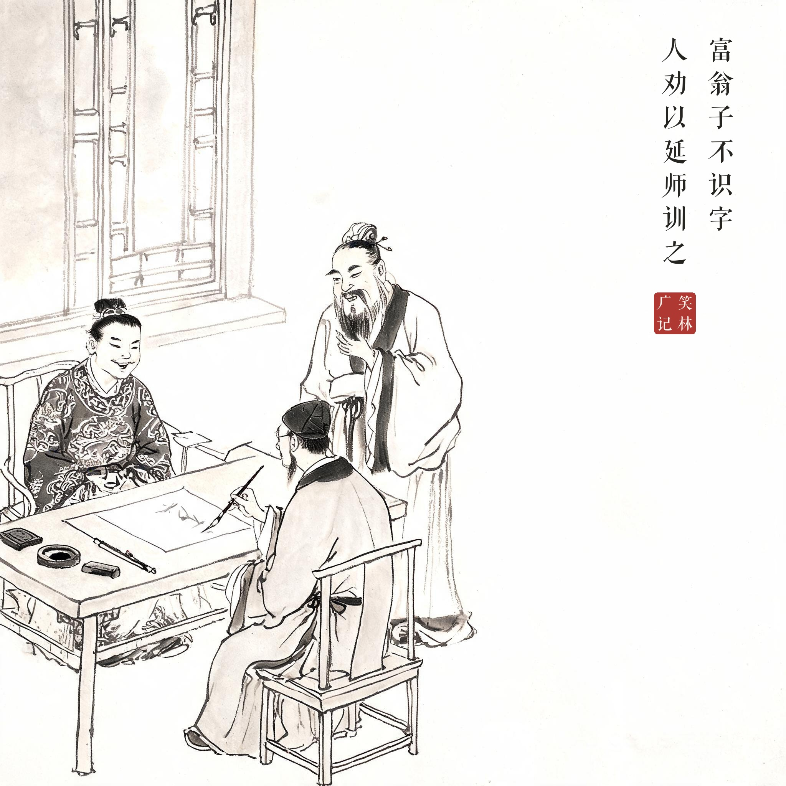
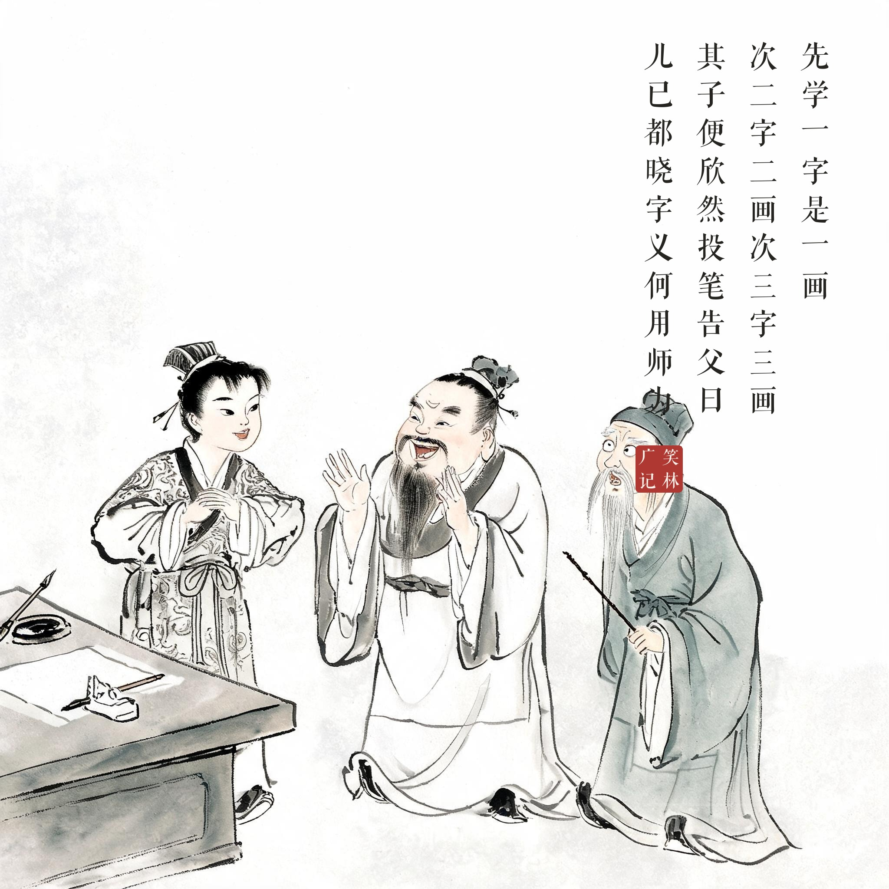
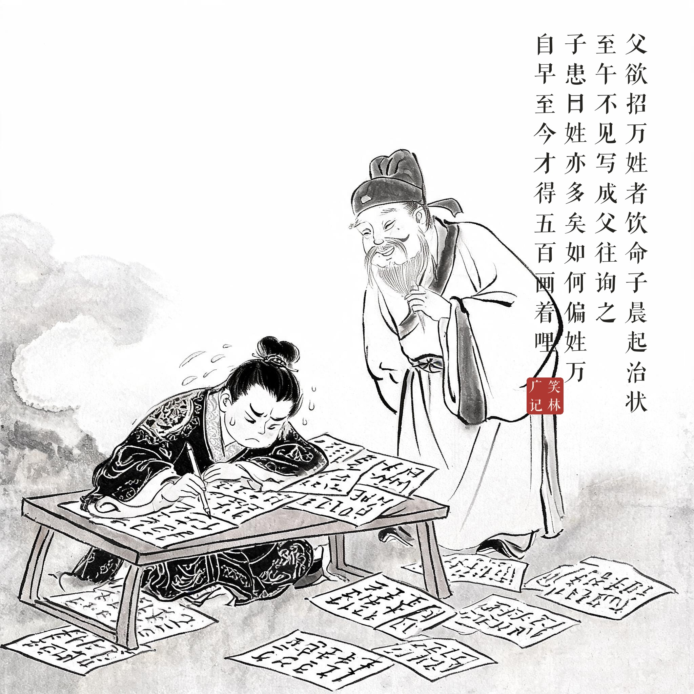

《笑林广记 · 古艳部》（[清]游戏主人纂集）
富翁子不识字，人劝以延师训之。先学"一"字是一画，次"二"字二画，次"三"字三画。其子便欣然投笔，告父曰："儿已都晓字义，何用师为？"父喜之，乃谢去。一日，父欲招万姓者饮，命子晨起治状，至午不见写成。父往询之，子患曰："姓亦多矣，如何偏姓万。自早至今，才得五百画着哩。"
富翁的儿子不识字，别人劝他请个先生教。先生先教"一"字是一画，接着"二"字二画、"三"字三画。儿子立刻得意地放下笔，对父亲说："我已经全懂字义了，还请先生干什么？"父亲高兴坏了，把先生辞退了。一天，父亲要请一位姓万的客人喝酒，让儿子一早写请柬，到中午还没写成。父亲去问，儿子发愁道："姓什么的不好，偏偏姓万！我从早上画到现在，才画完五百画！"
即民间流传的"万字"故事——学到"三"就以为全懂，"万"字画到五百画。半瓶子晃荡的自信，误起事来最贵。